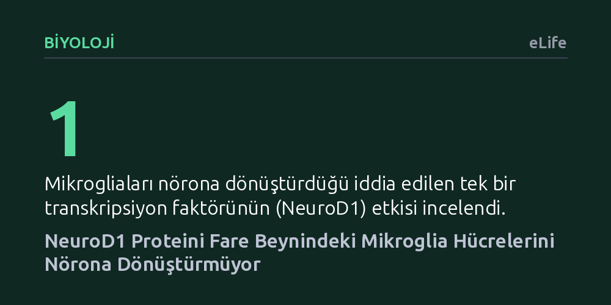

BIYOLOJI · eLife · 2026-10-17
Araştırmacılar, NeuroD1 proteininin fare beynindeki mikrogliaları nöronlara dönüştürüp dönüştürmediğini virüssüz genetik soy takibiyle inceledi. Bulgular, NeuroD1'in mikrogliaları nörona dönüştürmediğini, aksine bu hücrelerin programlı ölümünü tetiklediğini gösterdi.
Beyin hasarlarını tek bir genle mikrogliaları nörona çevirerek onarma vaadinin asılsız olduğunu göstererek kök hücre araştırmalarında yöntem güvenilirliğinin önemini kanıtlıyor.

İnme, travma veya nörodejeneratif hastalıklar nedeniyle beyinde meydana gelen nöron kayıpları kalıcı işlev bozukluklarına yol açar. Yetişkin memeli beyni kaybedilen nöronları kendi kendine yenileyemediği için, tıp dünyası uzun süredir beyin içindeki destek hücrelerini nöronlara dönüştürmenin yollarını arıyor. Özellikle beynin bağışıklık ordusu sayılan mikrogliaların ya da destek dokusu olan astrositlerin yerinde doğrudan nörona çevrilmesi, dışarıdan hücre nakline ihtiyaç duymayan cazip bir hücresel yenilenme stratejisi olarak görülüyordu.
Daha önceki bazı çalışmalar, "NeuroD1" adı verilen tek bir düzenleyici proteinin mikroglia hücrelerine aktarılmasıyla bu hücrelerin nöronlara dönüşebileceğini ve beyin hasarından sonra iyileşmeyi hızlandırdığını bildirmişti. Ancak bu iddialar bilim dünyasında ciddi tartışmalara yol açtı. Pek çok araştırmacı, deneylerde kullanılan virüs temelli gen aktarım araçlarının mikroglialar yerine ortamdaki mevcut nöronları boyayarak sahte bir dönüşüm izlenimi yaratmış olabileceğinden şüphelendi.
Bu tartışmayı aydınlatmak isteyen araştırmacılar, fare modellerinde virüslerin yol açabileceği sızıntı ve hata paylarını tamamen dışlayan virüssüz genetik soy takibi sistemleri geliştirdi. Bu yaklaşımda yalnızca mikroglia hücrelerine özgü genetik kilitler kullanılarak hücrelerin genomuna geri döndürülemez bir etiket yerleştirildi. Böylece NeuroD1 proteini devreye sokulduğunda, hücre biçim veya kimlik değiştirse dahi kökeninin mikroglia olup olmadığı kesin bir biçimde takip edilebildi.
Araştırma ekibi incelemeyi tek bir zaman noktasıyla sınırlamadı; iki fotonlu canlı mikroskopi teknolojisini kullanarak NeuroD1 taşıyan mikrogliaları yaşayan fare beyninde uzun süreler boyunca doğrudan gözlemledi. Hücrelerin gen ifadesi düzeyinde gerçekten neye dönüştüğünü moleküler çözünürlükte haritalamak için de tek hücre RNA dizilemesi uygulandı. Deneyler hem sağlıklı beyin dokusunda hem de doku hasarı oluşturulmuş ortamlarda titizlikle tekrarlandı.
Farklı yöntemlerle elde edilen tüm bulgular aynı sonuca işaret etti: NeuroD1 proteini aktarılan mikrogliaların hiçbiri nörona dönüşmedi. Ne sağlıklı fizyolojik koşullarda ne de hasar sonrasındaki iltihaplı ortamda mikroglialar nöron özellikleri kazanamadı; tüm hücreler mikroglia kimliğini korumayı sürdürdü. Geçmiş çalışmalarda gözlemlendiği iddia edilen dönüşümlerin, virüslerin çevre nöronlara kaçmasından kaynaklanan deneysel bir yanılsama olduğu doğrulandı.
Dahası, NeuroD1 proteininin mikroglia içinde sürekli ve yüksek düzeyde bulunmasının hücre için toksik olduğu saptandı. Araştırmacılar, bu proteinin kesintisiz ifadesinin mikroglia hücrelerinde apoptoz adı verilen programlı hücre ölümünü belirgin şekilde tetiklediğini ve hızlandırdığını tespit etti. Başka bir deyişle NeuroD1, mikrogliaları onarıcı sinir hücrelerine çevirmek yerine onların ölümüne yol açtı.
Bu çalışma, merkezi sinir sisteminde hücre kaderinin tek bir faktörle kolayca değiştirilemeyeceğini açıkça ortaya koyuyor. Mikroglialar embriyonik gelişimde kan ve bağışıklık kökeninden gelirken, nöronlar ektoderm kökenlidir; aralarındaki bu derin gelişimsel ayrımın tek bir gen aktarımıyla kapatılamayacağı gösterilmiş oldu.
Araştırmanın bilim dünyasına asıl katkısı, hücresel yeniden programlama alanında kullanılan deneysel araçların güvenilirliği konusunda kuvvetli bir uyarı yapmasıdır. Virüs temelli etiketlemeler yerine genetik soy takibi ve canlı mikroskopinin birincil doğrulama yöntemi olarak benimsenmesi, gelecekte beyin onarımı için geliştirilecek tedavilerin yanlış umutlar yerine sağlam ve tekrarlanabilir bilimsel temellere oturmasını sağlayacaktır.